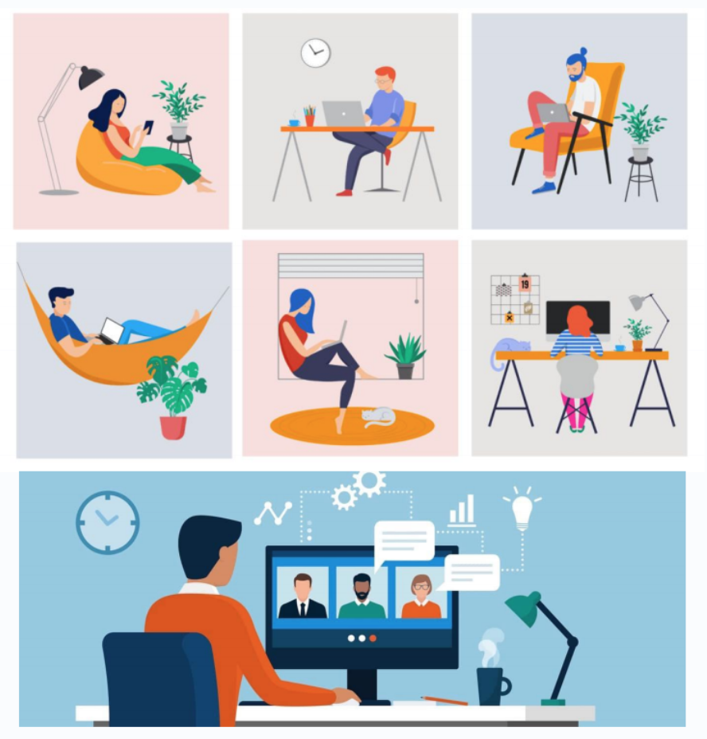
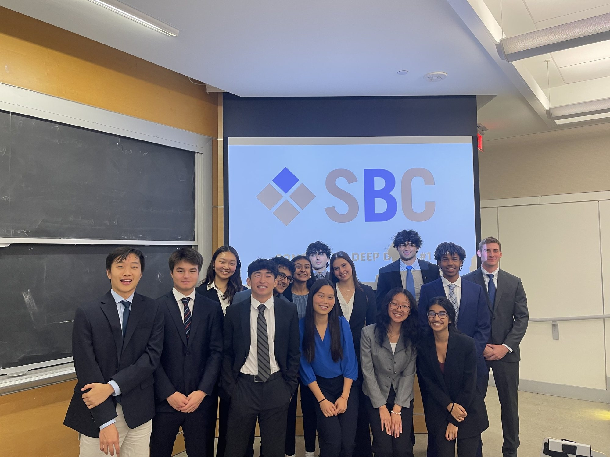
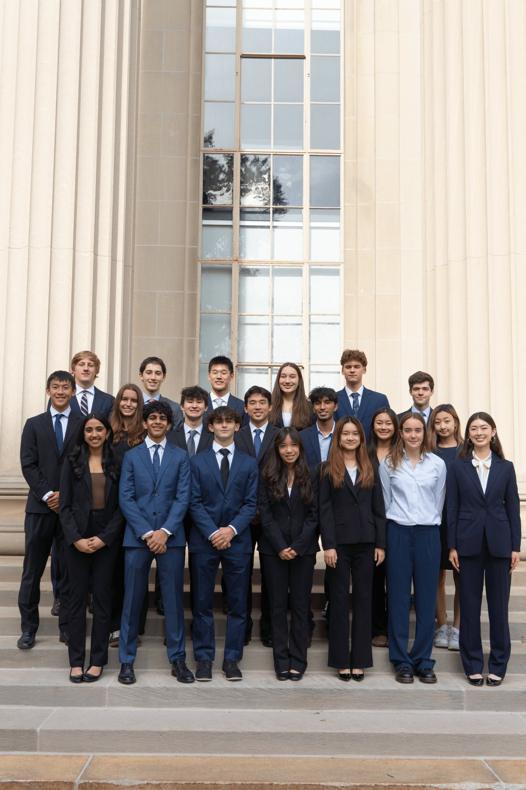
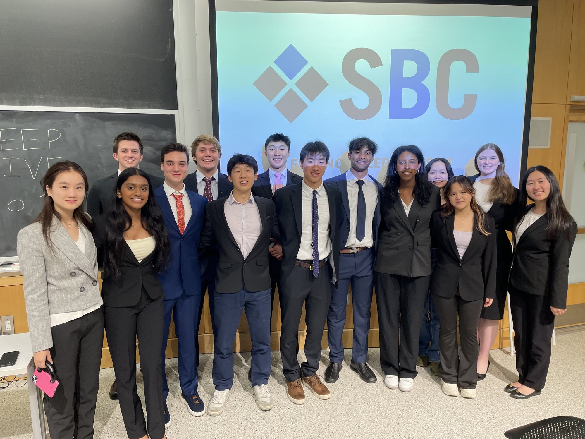
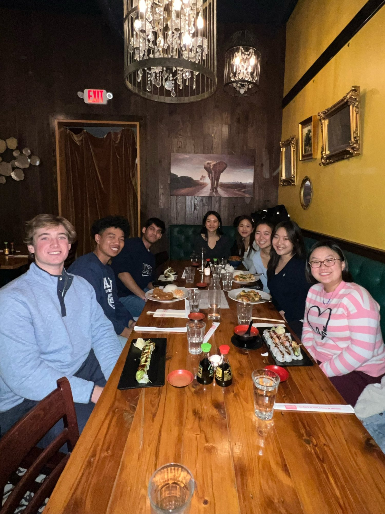
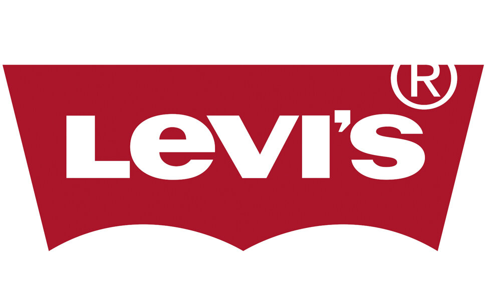
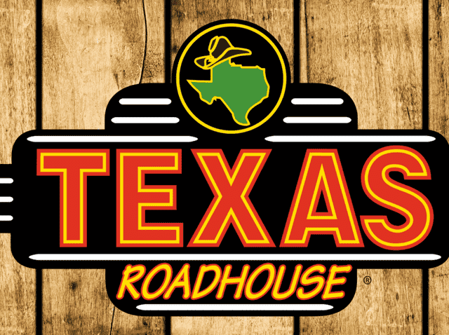

Consulting
Future of Work: Tech Industry
Claire Dong (’23), Subhash Kantamneni (’24), and Sophie Lockton (’24) explore working from home and recommend a hybrid work model for tech companies.
Read the full report
Every new member begins in BEP: a fall-semester program in business fundamentals, the three initiatives, and hands-on project work.
When new members are invited to join SBC, they join the Board Education Program (BEP) before becoming general board members. BEP gives new members a foundational background in business and networking.
The program also seeks to provide new members with an overview of SBC and its various initiatives. Further, it prepares new members to join and immediately start contributing toward the initiative of their choice at the conclusion of BEP.
The program begins immediately following SBC Week in the fall, and concludes at the end of the fall semester. Through engaging, case-based learning, new members explore finance, consulting, and entrepreneurship, and complete team and independent presentation projects that let each individual take a deeper look at their own areas of interest.
Economics, basic accounting, current events, professional development, and employer hiring processes.
Case-based introductions to finance, consulting, and entrepreneurship, the focus groups new members will later join.
Teams of two to three research a real business problem and present their findings to the General Board.
At the end of the fall semester, members join Finance, Consulting, or Entrepreneurship as full general board members.



SBC is a social network with friendships that extend long past graduation. During BEP, new members develop invaluable relationships that shape their time at MIT. BEP works to develop new members as friends and colleagues.
The Board Education Program culminates in two Deep Dive Projects, in which BEP members work in teams of 2–3 to research real business problems and apply the BEP curriculum in finance, consulting, and entrepreneurship. These projects are presented to the General Board, and they serve as a transition between BEP and full membership in one of SBC’s three initiatives.

Claire Dong (’23), Subhash Kantamneni (’24), and Sophie Lockton (’24) explore working from home and recommend a hybrid work model for tech companies.
Read the full report
Sophie Lockton (’24), Archer Wang (’23), and Haran Nadarajah (’23) present Levi’s strong position for post-pandemic recovery, increased digital presence, innovation, and focus on cutting costs.
Read the full report
Daniel Kim (’24) and Miriam Zuo (’24) recommend Texas Roadhouse on the basis of its strong, community-oriented brand, low debt, excellent historic growth, and driven management.
Read the full report